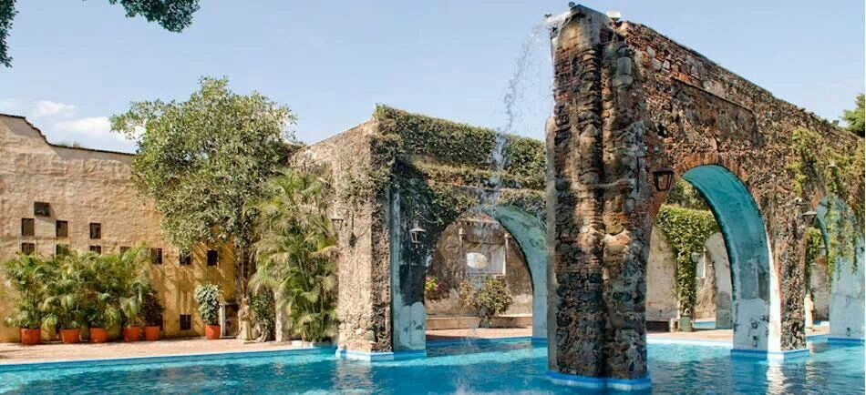
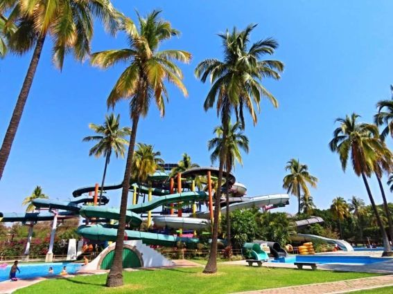

📸 Galería de Imágenes


🏊♂️ Reseña Histórica y Acuática
La Ex Hacienda de Temixco es un sitio con una carga histórica monumental que data del siglo XVII. Fue fundada por Martín Cortés, hijo del conquistador Hernán Cortés, para funcionar originalmente como un centro de cultivo y un importante ingenio azucarero. Debido a su enorme extensión estructural, durante la época de la Independencia y de la Revolución Mexicana, el recinto fue un punto estratégico militar disputado por diversas fuerzas, llegando a servir como fuerte y almacén de armas. Posteriormente, durante la Segunda Guerra Mundial, la hacienda fungió de manera oficial como un centro de concentración para ciudadanos japoneses-mexicanos.
En el año de 1968, este baluarte histórico dio un giro absoluto para transformarse en uno de los parques acuáticos más populares del estado de Morelos. El complejo aprovecha de manera espectacular toda la arquitectura colonial y los antiguos muros de piedra de la hacienda para albergar sus atracciones modernas. Hoy en día ofrece a sus visitantes una alberca de olas, un río con corriente, toboganes de gran altura, un área infantil multipista y extensas áreas ajardinadas para el descanso familiar.